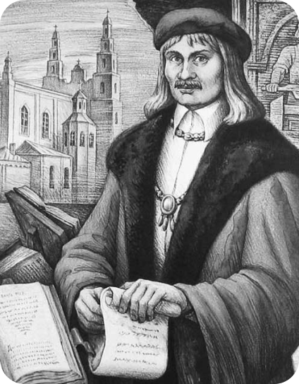
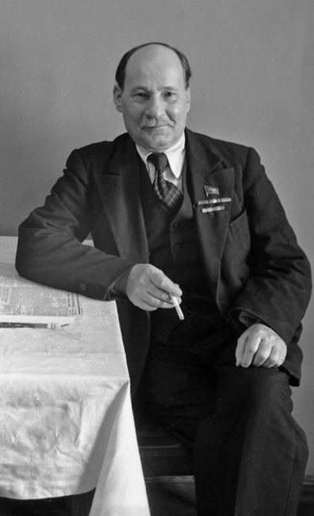

БЕЛАРУСКАЯ МОВА
РОДНАЯ
Францыск
У XVI стагоддзі ўклад у развіццё кірыліцы ўнёс Францыск Скарына, ужыўшы кірылічны алфавіт у сваіх друкаваных кнігах. Скарына ўнёс змены ў кірылічную графіку: ён надаў літарам больш круглявую і лёгкую форму, а ад некаторых архаічныхдублетных літар кірыліцы адмовіўся зусім. Скарына нетолькі перакладаў тэксты, але і арганізоўваў уласныя друкарні для друку сваіхпрац. Гэта дазволіла яму самастойна кантраляваць працэс вырабу іраспаўсюджвання кніг, што мела вялікае значэнне для развіцця беларускагапісьменства і мовы ў цэлым.
Скарына
Бранiслау Тарашкевіч
Першыяарфаграфічныя правілы сфарміраваліся ў беларускіх выданнях ў 1906-1915, але яныне былі выразна сфармуляваны і праілюстраваны. У 1918 была апублікавана «Беларускаяграматыка для школ» Браніслава Тарашкевіча, найбольш значная і прапрацаванаяграматыка беларускай мовы.
Акрамя працы надграматыкай, Тарашкевіч выступаў за прыняцце адзінай сістэмы арфаграфіі іпунктуацыі, якая дапаможа стандартызаваць беларускае пісьменства і зрабіць ягобольш даступным для больш шырокай аўдыторыі.
Колас
Паэзія іпроза Коласа адлюстроўваюць прыгажосць і багацце беларускай мовы, дапамагаючыпавысіць яе статус і спрыяць яе выкарыстанню ў літаратуры і культуры.
Якуб Коласлічыцца адной з найважнейшых фігур у беларускай літаратуры, а яго творыадыгралі вырашальную ролю ў фарміраванні нацыянальнай свядомасці і самабытнасцібеларускага народа.
Якуб
Дарагая беларуская мова, cёння, у Міжнародны дзень роднай мовы, я хачу выказаць табе сваю шчырую ўдзячнасць іпажадаць табе развіцця, каб ты заўсёды заставалася жывой і актуальнай, каб усёбольш людзей пазнавалі, вывучалі і ганарыліся табой. Няхай твая прыгажосць імоц будуць натхненнем для ўсіх нас, каб мы працягвалі цябе берагчы, шанаваць івыкарыстоўваць ва ўсіх сферах жыцця. Ты - непроста набор сімвалаў, а жывая крыніца нацыянальнай самасвядомасці і культурнайспадчыны. Слаўныя старонкі гісторыі твайго існавання нясуць у сабе вялікуюспадчыну нашага народа, і я ўпэўнены, што яны будуць абавязкова працягвацьнатхняць і ўзвышаць нас у будучыні.